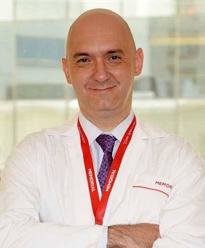

25-illik təcrübəsi olan türkiyəli həkim-uroloq: «25 yaşdan 60 yaşadək olan hər üçüncü kişi prostatitlə rastlaşır»
Mən, 25 ildən çox təcrübəyə malik olan həkim-uroloq kimi, sidik ifrazı, ereksiya və vaxtından qabaq eyakulyasiya problemləri ilə məşğul oluram. Əksər hallarda bütün bunlar – erkən mərhələdə prostatitin əlamətləridir. Xəstələr bütün Azərbaycandan gəlir, danışırlar ki, uzun müddət heç nə etmirdilər, son zamana kimi simptomatikaya cavab, indi isə xalq vasitələri, əlbəttə ki, effektivliyi olmayanlarla müalicə alırlar. Yekun — sağlamlıq üçün zərərli fəsadlar, müalicə və bərpa üçün lazım olan, bəzən isə invaziv müdaxilə zərurəti. Ən pis halda — onkologiya.
Kişilər erektil disfunksiya, vaxtından qabaq eyakulyasiya və sidik ifrazı problemlərindən danışmağı sevmirlər. Bir çoxları üçün bu — tabudur, və onu hətta müalicə həkimi ilə də müzakirə etmək olmaz. İkinci sevindirici olmayan fakt — çoxları 4-5 il gecikməklə həkimə müraciət edirlər.
Prostatit: fəaliyyətsizliyin başlıca təhlükəsidir.
Əsas problemlərdən biri – bilməməzlikdir. Xəstələr çox zaman tibbi məsələlərdən məlumatsız olurlar, buna görə də simptomları tanıya və onların nə dərəcədə ciddi olduğunu anlaya bilmirlər. Gəlin prostatitin yaranma səbəblərində və “həyəcanlı zənglərinin” səbəblərini araşdıraq.
Prostatit — prostat vəzinin iltihabı olmaqla, kəskin formada keçə və ümumi intoksikasiya əlamətləri ilə müşayiət oluna bilər:
- zəiflik
- əzəl və oynaqlarda ağrılar
- yüksək bədən temperaturu
- səbəbsiz yorğunluq hissi
- yuxululuq
- baş ağrıları
Bundan başqa, spesifik əlamətlər də mövcuddur. Simptomlar məcmusu, çox vaxtı da prostatitin kəskin formasına işarə edənlər – bunlardır:
- tezləşmiş sidik ifrazı (sutkada 8 dəfədən çox və gecədə 1 dəfədən çox)
- sidik ifrazı kanalında ağrı və ya yanğı
- qasıq nahiyəsində, kürəkdə, çanaqda, xayada, arxa dəlikdə ağrılar
- qəbzlik və ağrılı defekasiya
Prostat vəzi — kişinin reproduktiv sisteminin başlıca hissəsidir. Ölçüsünə görə bu orqanı qozla müqayisə etmək olar, çünki onun normal ölçüsü təxminən 3 х 4 х 2 santimetrdir. Vəzi birbaşa sidik ifrazı kanalı və eyakulyator axarları ilə “qonşuluq edir”, buna görə də iltihablaşma nəticəsində onun ölçülərinin dəyişməsi ilk növbədə sidik ifrazı və cinsi funksiyaya mənfi təsir göstərir.
Son məlumatlara görə, dunya əhalisinin təxminən yarısı 40 yaşdan yuxarı olan kisilerin, prostatitdən əziyyət çəkir.
Kəskin simptomatikanın nəzərə alınmaması və “əlaltı” vasitələrlə “qaçhaqaçla” müalicə olunması elə bir vəziyyətə gətirib çıxarır ki, 3-6 aydan sonra xəstəlik vaxtaşırı kəskinləşmələrlə kəskin formadan xroniki formaya keçir. Və bu an impotensiya yaranır. Xroniki bakterial prostatit və xroniki çanaq ağrısı sindromu xroniki formalara aid edilir. Lakin simptomsuz gedişinə və prostat vəzinin xərçənginə bənzər klinik təsvirinə görə asimptomatik xroniki prostatit daha təhlükəli növ kimi hesab etmək olar.
Gerçək nəticə olmadan uroloqların xidmətlərinə yüksək qiymətlər
Kəskin bakterial prostatitin müalicəsi törədicinin aşkarlanmasından və antibiotik kompleksinin təyin olunmasından başlayır. Lakin çox vaxt antibiotik rezinstentliyi, yəni prostatın iltihablaşmasına səbəb olan bakteriyaların təyin edilmiş antibiotikə həssaslığı testi aparılmır. Nəticədə xəstə ilkin və təkrar həkim qəbuluna, analizlərə, bahalı idxal preparatlarına görə pul ödəyir, nəticədə eyni, lakin artıq xroniki formaya keçmiş prostatiti, və antibiotiklər kursundan sonra disbakterioz şəklində “bonus” əldə edir. Prostatitin müalicə sxemi onilliklərlə dəyişdirilmir, və həkimlər hətta ödənişli klinikalarda xəstəyə fərdi yanaşma axtarmırlar, müasir elmin və farmakologiyanın nailiyyətlərinə diqqət etmirlər, ancaq adəti üzrə eyni və çoxdandır artıq effektivsiz olan preparatları təyin edirlər. Müasir və effektiv müalicənin olmaması nəticədə xəstəliyin xroniki formaya keçməsinə gətirib çıxarır, və adi metodlarla bundan 100%-lik qurtarmaq mümkün deyil. Prostat vəzisində iltihab proseslərinin vaxtaşırı kəskinləşməsi isə - nəinki yalnız sidik çıxarıcı yolların spontan diskomfortu və kişi cinsiyyət funksiyasına mənfi təsir deyil, o həmdə daha ciddi fəsadların, məsələn, onkologyanın yaranma riskinin əsas faktorlarından biridir.
Prostatın xərçəngi — kişilərdə ən yayılmış onkoloji xəstəlikdir
Həkimlərin səhlənkarlığının nəticələri və xəstələr tərəfindən simptomatikaya etinasızlıq xroniki bakterial prostatitin yaranmasına səbəb ola bilər, bundan tam sağalma demək olar ki mümkün deyil, və ya inpotensiya, abses, fistullar, sepsis, qalxan sidik infeksiyası – sistit, piyelonefrit, autoimmun sonsuzluq, onologiya kimi müxtəlif cür fəsadları əmələ gətirə bilər. Baxmayaraq ki, 40 yaşdan yuxarı yaş prostatitin əlavə risk faktorudur, müasir tədqiqatlar göstərir ki, ilkin inkişaf kişilərdə 20 və 42 yaş arasında baş verir. Bu vacib informasiyadır, çünki prostatın iltihabının ciddi fəsadlarından biri reproduktiv yaşda sonsuzluq ola bilər. Xəstəlik isə cavanlaşmağa davam edir. Statistikaya görə aşkarlanmış prostatit hallarının 20%-dən çoxu müxtəlif növ və ağırlıqda fəsadlarla nəticələnə bilər. Azərbaycanda bu faiz rəsmi məlumatlara görə təxminən 23,7%-dir, yəni başqa ölkələrdə olduğundan yüksəkdir. Və effektiv vasitə vaxtında təyin edilərsə çox hallarda qarşısı alınandır. Biz onkoloq kolleqalarımızla birlikdə çox vaxt belə bir mənzərənin şahidi oluruq: həkimlərdən qorxan və son mərhələdə prostatiti və yaxud da böhran anı çatanadək özünü hec cür büruzə verməyəm onkologiyası olan 35-45 yaşında kişi. Bu cür hallarda müsbət nəticə ehtimalı 35%-dən çox deyil.
20 - 60+ yaş arasında kişilər üçün vasitə — prostatitin profilaktikası və invaziv prosedurlar olmadan müalicəsi
Bakterial prostatitin müalicəsi, xüsusilə də xroniki formada olan, adətən 30%-ə yaxın tam sağalma hallarını göstərir. Müasir diaqnostika nailiyyətlərini, xəstəliyin aşkarlanma və müalicə üsullarını nəzərə alsaq, bu olduqca aşağı göstəricidir. Bütün digər hallarda simptomatikanı yalnız kompensasiya etmək və xəstənin həyat keyfiyyətini artırmaq olar. Vəziyyətə müşahidə illəri ərzində — həkimlərin qorxusu, vaxtsız müraciətlər, gecikdirilmiş vəziyyətlər, utancaqlıq və sidik ifrazı və ereksiya ilə olan problemrlərdən danışmaq arzusunun olmaması – kolleqarla birlikdə belə bir nəticəyə gəldik ki, evdə istifadə üçün nəzərdə tutulmuş effektiv vasitə xilas yolu ola bilər. Əsas odur ki, o təhlükəsiz olsun. Anlamaq lazımdır ki, biz həmişə xəstənin vəziyyətini, həyat və sağlamlığa təhlükə səviyyəsini qiymətləndiririk. “Ziyan vermə” prinsipini rəhbər tutaraq hərəkət edirik, buna görə də hər bir hkim preparatlar müxtəlifliyi içindən digər eynilərə rəğmən, minimum yan təsirləri aşkarlananı seçəcək. Eyni prinsipi xəstələrin özü də rəhbər tutmalıdır. Bu yaxınlarda bizdə Azərbaycanda yeni, demək olar ki, inqilabi vasitə - Prostilin buraxıldı. Formulu türk həkimləri tərəfindən işlənmiş və artıq patentləşdirilmişdir. Təsvirə əsasən Prostilin kəskinləşmə olmadan uzunmüddətli remissiyanın təmin edilməsinə səbəb olaraq, nəinki simptomatikanın aradan qaldırılmasına, həm də prostatının yaranmasının ilkin səbəbinin müalicə olunmasına yardım edir.
Müalicənin effektivlik faizi 90%-i keçdi
Anlamaq vacibdir ki, istənilən preparat sertifikasiyadan və bazara çıxmazdan qabaq bir neçə testləşmə, laborator və klinik müayinə mərhələsindən keçir, və bu zaman onun effektivliyi təsdiq olunmaqla mümkün yan təsirləri üzə çıxır. Hal-hazırda Prostilin komponentlərinin təsirliliyi artıq real xəstələr üzərində yoxlanılır, lakin buna qədər bu vasitə, təbii olaraq, artıq bütün tənzimlənə mərhələləri keçmişdrir. Cari tədqiqatlar təəccüblü nəticələri göstərir — Prostilin sayəsində 87%-dək xəstələr neqativ simptomatikadan tam qurtulur və prostatitdən sağalırlar. Lakin bazarda qısamüddətli müsbət effekti təmin edən bir çox vasitə mövcuddur. Bunun üçün diqqət ediləsi mühüm göstərici – residivlərin sayıdır. Ancaq Prostilin bu meyarın öhdəsindən də “əla” qiymətlə gəlmişdir. Prostatitin simptomlarının daha yumşaq formada təkrar təzahürlərinin cəmi 3,7%, ancaq ikinci kursu keçdikdən sona tamamilə və dönmədən keçib getmirlər. Prostilin hal hazırda istifadə qaydasına görə də, müxtəlif formada prostatitin müalicə metodlarının qiymətinə görə də ən əlçatan dərmanlardan biridir. Məhz bu səbəbdən aptek şəbəkələri onu rəflərə düzməyə can atmırlar, çünki o, iri şəbəkələrin hər il milyonlar qazandığı başqa bahalı dərmanların, məlhəm və antibiotiklərin birbaşa rəqibidir.